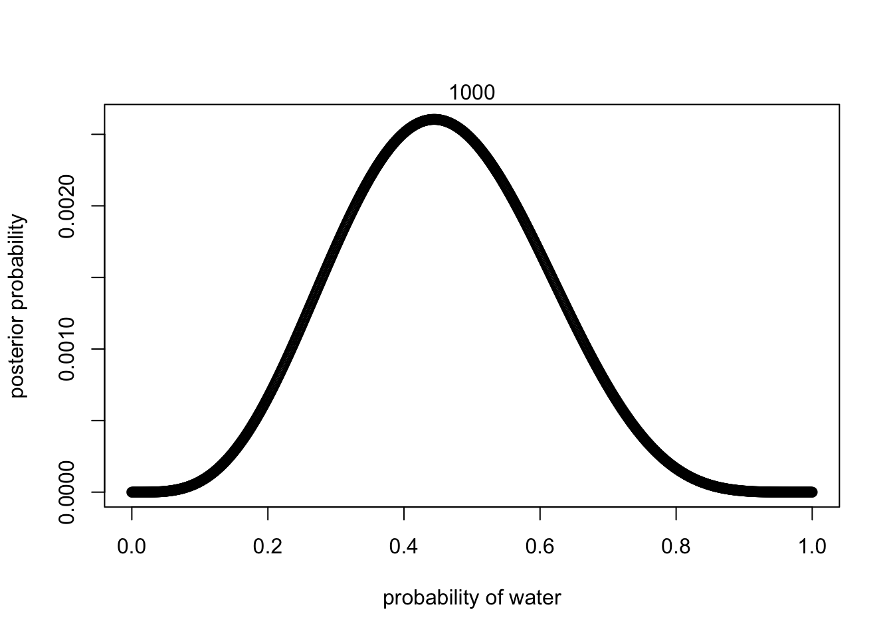

Supppose the globe tossing data (Chapter 2) had turned out ot be 4 water in 15 tosses. Construct the posterior distrubtuion, using grid approximation. Use the same flat prior as in the book.
grid_size = 1000
n_water = 4
p_grid = seq(from = 0, to = 1, length.out = grid_size)
# define prior
prior = rep(1, grid_size)
# compute likelihood at each value in grid
likelihood = dbinom(n_water, size = 9, prob = p_grid)
# compute product of likelihood and prior
unstd.posterior = likelihood * prior
# standardise the posterior, so it susms to 1
posterior = unstd.posterior / sum(unstd.posterior)
# plot
plot(p_grid, posterior, type = "b",
xlab = "probability of water",
ylab = "posterior probability")
mtext(grid_size) 